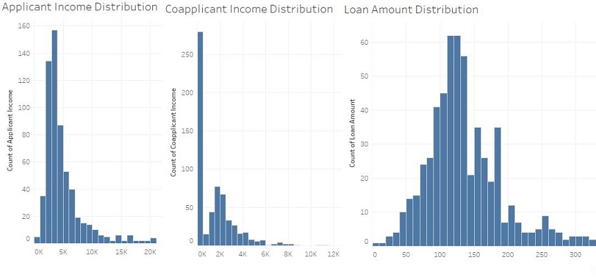

Loan Approval
A machine learning pipeline with Logistic Regression as a problem solver to predict if a loan will be approved for the applicants based on given data. The input training data is split to training and validation set, where pipeline is fitted with training and evaluated on validation. The best Pipeline Model is used to make predictions over the test data with output as a csv file.
Approach
- Fetch raw data.
- Data Exploration
- Quantitative Analysis
- Variable Identification - Identifying variable types to deal each type differently
- Categorical Variables : Columns with defined categories or class. Eg: "male" and "female" in gender. Such columns in raw data : Gender, Married, Dependents, Education, Self_Employed, Credit_History, Property_Area, Loan_Status.
- Continuous Variables : Columns with discrete numbers. Such columns in raw data : ApplicantIncome, CoapplicantIncome, LoanAmount, Loan_Amount_Term.
- Distribution Analysis on Continuous variables.
- Outlier detection in columns ApplicantIncome, LoanAmount and CoapplicantIncome
- Skewness detection:
Coapplicant Income - right skewed without normal distribution Applicant Income - slightly right skewed with normal distribution Loan Amount - slightly right skewed without normal distribution


- Null Detection - Collecting variables(columns) having nulls.
- Variable Identification - Identifying variable types to deal each type differently
- Feature Identification - Identifying features that influence the target variable(column) LoanStatus.
- Categorical-Target variable Graphical Analysis.
- credit history
- less number of dependents
- better education
- Continuous-Target variable Graphical Analysis.
- Hypothesis Testing : Performed dynamically within the pipeline by ChiSqSelecter
- Correlation : Selecting continuous variables on the basis of being dependent and independent to the target variable
Analysing above graphs, it can be said that applicants with:


- Feature Munging - Cleaning up features(columns) to prepare data for further stages.
- Null Removal
- Outlier Removal
- Quantitative Analysis
- Setting Pipeline Stages
- Feature Extractors - Stage to derive possible new features based on current ones
- Problem Solver - Estimator to be as classifier for the problem.
- Dataset splitting - Splitting data to :
- Training set - To train the pipeline on and to prepare a model ready to work on real data.
- Validation set - To evaluate the model made in above step.
- Problem Solver Preparation.
- Setting up Pipeline/Estimator - Preparing Logistic Regression model with feature engineering and selection transformers in a pipeline.
- Setting up Parameter grid - Preparing hyperparameter grid for tuning and training the pipeline.
- Setting up Evaluator - Preparing an evaluator to evaluate the pipeline based on Validation set prepared above.
- Hyperparameter tuning using training and validation set and getting the best model by Cross-Validator.
- Best Model Evaluation.
- Saving/Showing Results to Repository
- Testing Results.
- Evaluation Results.
- The best model.
Conclusion
The pipeline with logistic regression model trained on the training set is able to predict the target variable with 82% accuracy.